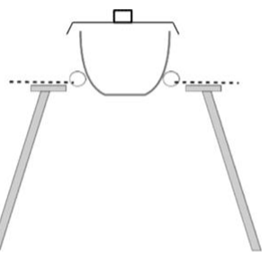

Formulae, equations and amounts of substance
Atoms are far too small to count one at a time, so chemists count them by weighing, by measuring gas volumes and by measuring solution volumes. This topic builds the idea of the mole, the three equations that link it to things you can measure, and the balanced equations that tell you how much of each substance reacts and forms. Almost every calculation in A level chemistry rests on what is here.
1. The mole and the Avogadro constant
A grain of salt holds about 1018 ions, so counting particles directly is hopeless. Instead chemists use a counting unit, the mole (symbol mol), in the same way that a baker counts eggs in dozens. One mole of anything contains the same number of particles: the Avogadro constant, \( L = 6.02 \times 10^{23}\ \mathrm{mol^{-1}} \).
The number was chosen so that the mass of one mole of a substance in grams is numerically the same as its relative mass. One mole of carbon-12 atoms has a mass of exactly 12 g, one mole of water molecules (relative mass 18.0) has a mass of 18.0 g, and so on. That is why weighing is a way of counting.
Amount of substance is measured in moles. One mole is the amount of substance that contains as many particles as there are atoms in exactly 12 g of carbon-12, which is \( 6.02 \times 10^{23} \) particles.
- Relative atomic mass, \(A_\mathrm{r}\): the weighted mean mass of an atom of an element, measured relative to one twelfth of the mass of an atom of carbon-12. It has no units.
- Relative molecular mass, \(M_\mathrm{r}\): the mean mass of a molecule relative to one twelfth of the mass of a carbon-12 atom. Add up the \(A_\mathrm{r}\) values of every atom in the formula. For ionic compounds, which have no molecules, the same sum is called the relative formula mass.
- Molar mass, \(M\): the mass of one mole of a substance, in g mol−1. It has the same number as \(M_\mathrm{r}\): for CaCO3, \(M = 40.1 + 12.0 + 3 \times 16.0 = 100.1\ \mathrm{g\,mol^{-1}}\).
- Number of particles: \( N = n \times L \), where \(n\) is the amount in moles.
Always say which particle you are counting. One mole of water molecules contains two moles of hydrogen atoms, one mole of oxygen atoms and three moles of atoms altogether. One mole of sodium chloride contains one mole of Na+ ions and one mole of Cl− ions, so two moles of ions in total.
How many atoms are there in 5.00 g of aluminium? (\(A_\mathrm{r}\): Al = 27.0)
Find the amount: \( n = \dfrac{m}{M} = \dfrac{5.00}{27.0} = 0.1852\ \mathrm{mol} \)
Keep the unrounded value in your calculator for the next step.
Multiply by the Avogadro constant: \( N = 0.1852 \times 6.02 \times 10^{23} = 1.11 \times 10^{23} \) atoms
How many atoms are there in 0.500 mol of ammonia, NH3?
Number of molecules: \( 0.500 \times 6.02 \times 10^{23} = 3.01 \times 10^{23} \)
Each molecule contains 4 atoms (one N and three H), so the number of atoms is \( 4 \times 3.01 \times 10^{23} = 1.20 \times 10^{24} \).
The same idea gives the mass of a single atom: one carbon-12 atom has a mass of \( 12 \div (6.02 \times 10^{23}) = 1.99 \times 10^{-23}\) g.
2. Amount from mass
For any pure solid, liquid or gas, the amount in moles comes from its mass and its molar mass:
\[ n = \frac{m}{M} \qquad \text{amount (mol)} = \frac{\text{mass (g)}}{\text{molar mass (g mol}^{-1})} \]The mass must be in grams. Convert first: 1 g = 1000 mg, 1 kg = 1000 g and 1 tonne = 106 g. Rearranging gives \( m = n \times M \) and \( M = m / n \), the last of which is how you identify an unknown substance from a measured mass and amount.
This page uses these relative atomic masses from the periodic table: H 1.0, C 12.0, N 14.0, O 16.0, Na 23.0, Mg 24.3, Al 27.0, S 32.1, Cl 35.5, K 39.1, Ca 40.1, Fe 55.8, Cu 63.5.
Give your final answer to the same number of significant figures as the least precise piece of data in the question, usually 3. Never round in the middle of a calculation: carry the full calculator value through and round only at the end, otherwise rounding errors pile up.
Hydrated salts and water of crystallisation
Many salts crystallise from water with water molecules built into their crystal lattice. This is water of crystallisation, and the formula shows it after a dot. Blue hydrated copper(II) sulfate is CuSO4·5H2O. Heating drives the water off and leaves white anhydrous CuSO4. The water is part of the compound, so it counts in the molar mass.
What amount of CuSO4·5H2O is in 2.50 g of the blue crystals?
\( M = 63.5 + 32.1 + (4 \times 16.0) + (5 \times 18.0) = 249.6\ \mathrm{g\,mol^{-1}} \)
Each H2O has \(M = 18.0\). Forgetting the water, and using 159.6, is the usual error.
\( n = \dfrac{2.50}{249.6} = 0.0100\ \mathrm{mol} \)
To find the number of water molecules, \(x\), in a hydrated salt, heat a weighed sample in a crucible to drive off the water, then weigh the anhydrous solid that is left. The same method measures the mass lost in other thermal decompositions, or the mass gained when a metal such as magnesium is burned to its oxide.

- Method: weigh the clean, dry crucible and lid; add about 2 g of the hydrated salt and weigh again; heat strongly for a few minutes; let it cool and reweigh; then reheat, cool and reweigh until two readings agree. This is heating to constant mass, and it shows that all the water has gone.
- Sample size: about 2 g is right. A much larger sample may not lose all its water. A tiny sample gives a mass change so small that the balance's uncertainty becomes a large percentage of it.
- Dry crucible: any water already on the crucible is lost on heating and counted as water of crystallisation, so \(x\) comes out too big.
- Cooling: cool the anhydrous solid in a desiccator, because many anhydrous salts reabsorb water from the air.
4.92 g of hydrated magnesium sulfate, MgSO4·xH2O, is heated to constant mass. 2.40 g of anhydrous MgSO4 is left. Find \(x\).
Mass of water lost \( = 4.92 - 2.40 = 2.52\ \mathrm{g} \)
\( n(\mathrm{MgSO_4}) = \dfrac{2.40}{120.4} = 0.01993\ \mathrm{mol} \) and \( n(\mathrm{H_2O}) = \dfrac{2.52}{18.0} = 0.140\ \mathrm{mol} \)
\(M(\mathrm{MgSO_4}) = 24.3 + 32.1 + 4 \times 16.0 = 120.4\ \mathrm{g\,mol^{-1}}\).
Divide by the smaller amount: \( \dfrac{0.140}{0.01993} = 7.02 \), so \( x = 7 \) and the formula is MgSO4·7H2O.
Think about which way an error pushes the answer. If the salt is not heated to constant mass, some water stays behind, the mass lost is too small and \(x\) comes out too low. If solid spits out of the crucible, the mass lost is too big and \(x\) comes out too high.
3. Empirical and molecular formulae
- Empirical formula: the simplest whole-number ratio of the atoms of each element in a compound.
- Molecular formula: the actual number of atoms of each element in one molecule. It is always a whole-number multiple of the empirical formula.
Ethene is C2H4 and cyclohexane is C6H12, but both have the empirical formula CH2. Analysis of a compound tells you the mass (or percentage by mass) of each element, which only gives the ratio of atoms. You need the relative molecular mass, for example from a mass spectrum, to get the molecular formula.
- Divide the mass (or percentage) of each element by its \(A_\mathrm{r}\). This gives the amount of each element in moles.
- Divide every answer by the smallest one.
- If any result is close to x.5, x.33 or x.25, multiply all of them by 2, 3 or 4 to reach whole numbers.
- For the molecular formula, divide \(M_\mathrm{r}\) by the empirical formula mass and multiply the empirical formula by the result.
A hydrocarbon contains 85.7% carbon and 14.3% hydrogen by mass. Its \(M_\mathrm{r}\) is 56.0. Find its molecular formula.
Take 100 g, so there are 85.7 g of C and 14.3 g of H. Divide by \(A_\mathrm{r}\): C: \( 85.7 \div 12.0 = 7.14\ \mathrm{mol} \); H: \( 14.3 \div 1.0 = 14.3\ \mathrm{mol} \)
Divide by the smaller value: C: \( 7.14 \div 7.14 = 1 \); H: \( 14.3 \div 7.14 = 2.00 \). The empirical formula is CH2.
Empirical formula mass \( = 12.0 + 2.0 = 14.0 \), and \( 56.0 \div 14.0 = 4 \). The molecular formula is C4H8.
\(M_\mathrm{r}\) does not need to be exact. The multiple must be a whole number, so a measured value of 55 or 57 still points to 4.
An oxide of iron contains 69.9% iron by mass. Find its empirical formula.
Oxygen makes up the rest: \( 100 - 69.9 = 30.1\% \). Fe: \( 69.9 \div 55.8 = 1.253 \); O: \( 30.1 \div 16.0 = 1.881 \)
Divide by the smaller: Fe = 1, O = \( 1.881 \div 1.253 = 1.50 \)
1.50 is not a whole number, so double both: Fe = 2, O = 3. The empirical formula is Fe2O3.
Rounding 1.50 to 2 would give FeO2, which is wrong. Only round values that are within about 0.1 of a whole number.
4. Balanced equations and ionic equations
Atoms are not created or destroyed in a chemical reaction, so a balanced equation has the same number of each kind of atom on both sides. You balance it by changing the numbers in front of formulas, never the formulas themselves. The balancing numbers give the mole ratio in which substances react: in N2(g) + 3H2(g) → 2NH3(g), 1 mol of nitrogen reacts with 3 mol of hydrogen to make 2 mol of ammonia. State symbols show the physical state: (s) solid, (l) liquid, (g) gas and (aq) dissolved in water.
Ionic equations
When ionic compounds dissolve, the ions separate and move independently. Many of them take no part in the reaction and are present unchanged at the end. These are spectator ions. An ionic equation leaves them out and shows only the particles that change, which reveals what is really happening. It must balance for charge as well as for atoms.
- Split into ions: soluble ionic compounds in solution (aq), including strong acids such as HCl(aq), H2SO4(aq) and HNO3(aq), and soluble hydroxides such as NaOH(aq).
- Do not split: solids (s), including precipitates, insoluble oxides and carbonates; liquids such as water; gases; and covalent molecules.
Start with the balanced full equation, including state symbols:
AgNO3(aq) + NaCl(aq) → AgCl(s) + NaNO3(aq)
Split every aqueous ionic compound into its ions:
Ag+(aq) + NO3−(aq) + Na+(aq) + Cl−(aq) → AgCl(s) + Na+(aq) + NO3−(aq)
AgCl is a solid precipitate, so it stays together.
Cross out ions that appear unchanged on both sides (Na+ and NO3−):
Ag+(aq) + Cl−(aq) → AgCl(s)
Check the charges: 1+ and 1− on the left give zero overall, and so does the neutral solid on the right. Any soluble silver salt mixed with any soluble chloride gives this same equation, which is why ionic equations are so useful.
Displacement reactions
A more reactive metal displaces a less reactive metal from a solution of its compound, because the more reactive metal gives up electrons more readily. Zinc dropped into blue copper(II) sulfate solution becomes coated in red-brown copper, the blue colour fades and the mixture warms up:
Zn(s) + CuSO4(aq) → ZnSO4(aq) + Cu(s) ionic: Zn(s) + Cu2+(aq) → Zn2+(aq) + Cu(s)
Halogens behave the same way: a more reactive halogen, which is a stronger oxidising agent, displaces a less reactive one from a solution of its halide ions. The colour change shows the new halogen forming.
| Mix | Ionic equation | What you see |
|---|---|---|
| chlorine water + potassium bromide | Cl2(aq) + 2Br−(aq) → 2Cl−(aq) + Br2(aq) | colourless solution turns yellow-orange |
| chlorine water + potassium iodide | Cl2(aq) + 2I−(aq) → 2Cl−(aq) + I2(aq) | colourless solution turns brown |
| bromine water + potassium iodide | Br2(aq) + 2I−(aq) → 2Br−(aq) + I2(aq) | orange solution turns brown |
| bromine water + potassium chloride | no reaction | stays orange: bromine is less reactive than chlorine |
You will meet the reasons for these trends in the topic on redox and the halogens.
Reactions of acids
An acid releases hydrogen ions, H+(aq), in water. The common strong acids are hydrochloric acid HCl, sulfuric acid H2SO4 and nitric acid HNO3. A base neutralises an acid: metal oxides, metal hydroxides, carbonates and ammonia are all bases. An alkali is a base that dissolves in water to release hydroxide ions, OH−(aq), for example NaOH, KOH and aqueous ammonia. A salt forms when the hydrogen of an acid is replaced by a metal ion or an ammonium ion.
| Reaction | Full equation | Ionic equation | What you see |
|---|---|---|---|
| acid + metal → salt + hydrogen | Mg(s) + 2HCl(aq) → MgCl2(aq) + H2(g) | Mg(s) + 2H+(aq) → Mg2+(aq) + H2(g) | fizzing; the metal dissolves; the mixture warms |
| acid + alkali → salt + water | NaOH(aq) + HNO3(aq) → NaNO3(aq) + H2O(l) | H+(aq) + OH−(aq) → H2O(l) | no visible change; the temperature rises |
| acid + insoluble base → salt + water | CuO(s) + H2SO4(aq) → CuSO4(aq) + H2O(l) | CuO(s) + 2H+(aq) → Cu2+(aq) + H2O(l) | black solid dissolves to give a blue solution |
| acid + solid carbonate → salt + water + carbon dioxide | CaCO3(s) + 2HCl(aq) → CaCl2(aq) + H2O(l) + CO2(g) | CaCO3(s) + 2H+(aq) → Ca2+(aq) + H2O(l) + CO2(g) | effervescence; the solid dissolves; the gas turns limewater milky |
| acid + carbonate solution | Na2CO3(aq) + 2HCl(aq) → 2NaCl(aq) + H2O(l) + CO2(g) | CO32−(aq) + 2H+(aq) → H2O(l) + CO2(g) | effervescence |
| acid + ammonia → ammonium salt | NH3(aq) + HCl(aq) → NH4Cl(aq) | NH3(aq) + H+(aq) → NH4+(aq) | no visible change in solution |
Every neutralisation of a strong acid by an alkali has the same ionic equation, H+(aq) + OH−(aq) → H2O(l). In the copper(II) oxide reaction only the sulfate ion is a spectator: the oxide is a solid and the copper ends up in solution, so both change state and must appear.
Precipitation reactions
Mixing two solutions can bring together a cation and an anion that form an insoluble solid. The solid appears as a cloudy precipitate, and its colour often identifies the ions.
| Ions mixed | Ionic equation | Precipitate |
|---|---|---|
| silver and chloride | Ag+(aq) + Cl−(aq) → AgCl(s) | white |
| silver and bromide | Ag+(aq) + Br−(aq) → AgBr(s) | cream |
| silver and iodide | Ag+(aq) + I−(aq) → AgI(s) | pale yellow |
| barium and sulfate | Ba2+(aq) + SO42−(aq) → BaSO4(s) | white |
| copper(II) and hydroxide | Cu2+(aq) + 2OH−(aq) → Cu(OH)2(s) | pale blue |
| iron(III) and hydroxide | Fe3+(aq) + 3OH−(aq) → Fe(OH)3(s) | orange-brown |
Making salts
- Soluble salt from an insoluble base, metal or carbonate: add the solid to warm acid until no more dissolves, so that it is in excess and all the acid is used up. Filter off the excess solid. Evaporate the filtrate to about half its volume, then leave it to cool and crystallise slowly. Filter off the crystals and dry them between filter papers.
- Soluble salt from an alkali: both reactants are solutions, so excess cannot be filtered off. Do a titration with an indicator to find the exact volumes that react, then repeat with those volumes and no indicator, and crystallise as above.
- Insoluble salt: mix solutions containing its two ions, filter off the precipitate, wash it with distilled water to remove soluble impurities, and dry it.
The yield of crystals is always below 100%, because some salt stays dissolved in the solution left behind and some is lost on the filter paper and in transfers.
5. Concentration of solutions
A solution is a solute dissolved in a solvent, usually water. Its concentration tells you how much solute is in each cubic decimetre of solution:
\[ c = \frac{n}{V} \qquad \text{concentration (mol dm}^{-3}) = \frac{\text{amount (mol)}}{\text{volume of solution (dm}^{3})} \]1 dm3 is a cube 10 cm on each side, so it equals 1000 cm3 (one litre), and 1 m3 = 1000 dm3. Volumes are usually measured in cm3, so divide by 1000 before using the equation. Concentration can also be written in g dm−3, the mass of solute in each dm3: multiply the concentration in mol dm−3 by the molar mass.
3.18 g of anhydrous sodium carbonate, Na2CO3, is dissolved in water and made up to 250.0 cm3. Find its concentration in mol dm−3 and in g dm−3.
\( M = (2 \times 23.0) + 12.0 + (3 \times 16.0) = 106.0\ \mathrm{g\,mol^{-1}} \), so \( n = \dfrac{3.18}{106.0} = 0.0300\ \mathrm{mol} \)
Volume in dm3: \( 250.0 \div 1000 = 0.2500\ \mathrm{dm^3} \)
\( c = \dfrac{0.0300}{0.2500} = 0.120\ \mathrm{mol\,dm^{-3}} \)
In g dm−3: \( 0.120 \times 106.0 = 12.7\ \mathrm{g\,dm^{-3}} \)
Check: 3.18 g in a quarter of a cubic decimetre is the same as 12.7 g in a whole one.
Concentrations of ions
A dissolved ionic compound separates into its ions, so the concentration of an ion can be larger than the concentration of the compound. In 0.200 mol dm−3 sodium sulfate, Na2SO4(aq) → 2Na+(aq) + SO42−(aq), so [Na+] = 0.400 mol dm−3 and [SO42−] = 0.200 mol dm−3.
How many chloride ions are in 25.0 cm3 of 0.150 mol dm−3 calcium chloride solution?
\( n(\mathrm{CaCl_2}) = c \times V = 0.150 \times 0.0250 = 3.75 \times 10^{-3}\ \mathrm{mol} \)
Each CaCl2 gives two Cl− ions: \( n(\mathrm{Cl^-}) = 2 \times 3.75 \times 10^{-3} = 7.50 \times 10^{-3}\ \mathrm{mol} \)
\( N = 7.50 \times 10^{-3} \times 6.02 \times 10^{23} = 4.52 \times 10^{21} \) ions
Making a standard solution
A standard solution is one whose concentration is known accurately. The aim is to get every bit of the weighed solid into a known final volume.
- Weigh: weigh a weighing bottle containing the solid, tip the solid into a beaker, and reweigh the bottle. The difference is the mass transferred. (Alternatively, rinse the weighing bottle into the beaker with distilled water.)
- Dissolve: add about 100 cm3 of distilled water and stir with a glass rod until all the solid has dissolved. Warm gently if needed, and let the solution cool before the next step, because volume changes with temperature.
- Transfer: pour the solution through a funnel into a volumetric flask (for example 250 cm3). Rinse the beaker, rod and funnel with distilled water and add the rinsings to the flask, so that no solute is left behind.
- Make up to the mark: add distilled water until the bottom of the meniscus sits on the graduation line, using a dropping pipette for the last few drops, with your eye level with the mark.
- Mix: stopper the flask and invert it several times so that the concentration is the same throughout.
Dilution
Adding water to a solution does not change the amount of solute, it only spreads it through a bigger volume. So \( n = c_1V_1 = c_2V_2 \). The new volume is the original volume plus the volume of water added. To dilute accurately, measure the original solution with a volumetric pipette (it has a much smaller uncertainty than a measuring cylinder) and make it up in a volumetric flask.
What volume of water must be added to 10.0 cm3 of 2.00 mol dm−3 hydrochloric acid to dilute it to 0.250 mol dm−3?
Amount of HCl, which does not change: \( n = 2.00 \times 0.0100 = 0.0200\ \mathrm{mol} \)
Volume needed at the new concentration: \( V = \dfrac{n}{c} = \dfrac{0.0200}{0.250} = 0.0800\ \mathrm{dm^3} = 80.0\ \mathrm{cm^3} \)
Water to add \( = 80.0 - 10.0 = 70.0\ \mathrm{cm^3} \)
The concentration fell by a factor of 8, so the final volume must be 8 times the starting volume.
6. Parts per million
Very low concentrations, such as pollutants in water or trace gases in the air, are given in parts per million (ppm), which avoids awkward small numbers.
\[ \text{ppm by mass} = \frac{\text{mass of substance}}{\text{total mass of mixture}} \times 10^{6} \qquad \text{ppm by volume} = \frac{\text{volume of gas}}{\text{total volume of gas mixture}} \times 10^{6} \]1 ppm by mass is 1 mg in every kg. A dilute aqueous solution has a density of about 1 kg dm−3, so 1 ppm is also roughly 1 mg in each dm3.
A 250 g sample of fish contains 0.100 mg of mercury. What is its mercury content in ppm by mass?
Use the same units for both masses: \( 0.100\ \mathrm{mg} = 1.00 \times 10^{-4}\ \mathrm{g} \)
\( \text{ppm} = \dfrac{1.00 \times 10^{-4}}{250} \times 10^{6} = 0.400\ \text{ppm} \)
The other way round: air contains about 420 ppm of carbon dioxide by volume, so 1.00 dm3 of air holds \( 420 \times 10^{-6} \times 1.00 = 4.20 \times 10^{-4}\ \mathrm{dm^3} \), which is 0.420 cm3 of CO2.
7. Volumes of gases
In a gas the molecules are far apart, so the volume a gas takes up depends almost entirely on how many molecules there are, not on how big they are. This is Avogadro's law: equal volumes of all gases, at the same temperature and pressure, contain the same number of molecules. It means one mole of any gas occupies the same volume under the same conditions. At room temperature and pressure (r.t.p.) this molar volume is taken as 24.0 dm3 mol−1.
\[ n = \frac{V}{24.0} \quad (V \text{ in dm}^3) \qquad\text{or}\qquad n = \frac{V}{24\,000} \quad (V \text{ in cm}^3) \]Reacting volumes of gases
Because volume is proportional to amount, the balancing numbers in an equation give the ratio of gas volumes directly, as long as all the volumes are measured at the same temperature and pressure. There is no need to convert to moles.
40 cm3 of propane is burned in 250 cm3 of oxygen. All volumes are measured at r.t.p. What is the total volume of gas at the end?
C3H8(g) + 5O2(g) → 3CO2(g) + 4H2O(l)
Oxygen used: \( 5 \times 40 = 200\ \mathrm{cm^3} \), so \( 250 - 200 = 50\ \mathrm{cm^3} \) of oxygen is left over.
Carbon dioxide formed: \( 3 \times 40 = 120\ \mathrm{cm^3} \)
At r.t.p. the water is a liquid with a negligible volume, so the gas left is \( 50 + 120 = 170\ \mathrm{cm^3} \).
The ideal gas equation
The molar volume of 24.0 dm3 only applies at room conditions. For any temperature and pressure use the ideal gas equation, which works for any gas or mixture of gases (then \(n\) is the total amount of all the gases):
\[ pV = nRT \]| Quantity | Unit you must use | Converting |
|---|---|---|
| pressure \(p\) | Pa | kPa × 1000 = Pa |
| volume \(V\) | m3 | cm3 × 10−6 = m3; dm3 × 10−3 = m3 |
| temperature \(T\) | K | °C + 273 = K |
| gas constant \(R\) | 8.31 J mol−1 K−1 | given |
Most wrong answers with \(pV = nRT\) come from units. A volume in cm3 left unconverted is out by a factor of a million, and a temperature in °C gives nonsense. Convert everything to Pa, m3 and K before you substitute.
0.200 g of a volatile liquid is injected into a gas syringe in an oven at 100 °C. It evaporates completely and the vapour occupies 78.0 cm3 at 101 kPa. Find \(M_\mathrm{r}\).
Convert the units: \( p = 101\,000\ \mathrm{Pa} \), \( V = 78.0 \times 10^{-6}\ \mathrm{m^3} \), \( T = 100 + 273 = 373\ \mathrm{K} \)
\( n = \dfrac{pV}{RT} = \dfrac{101\,000 \times 78.0 \times 10^{-6}}{8.31 \times 373} = 2.54 \times 10^{-3}\ \mathrm{mol} \)
\( M = \dfrac{m}{n} = \dfrac{0.200}{2.54 \times 10^{-3}} = 78.7\ \mathrm{g\,mol^{-1}} \), so \(M_\mathrm{r}\) = 78.7. The liquid could be benzene, C6H6 (\(M_\mathrm{r}\) = 78.0).
For a fixed amount of gas, \(nR\) is constant, so \( \dfrac{p_1V_1}{T_1} = \dfrac{p_2V_2}{T_2} \). This handles a gas moved to new conditions without finding \(n\) first. At constant temperature it reduces to \(p_1V_1 = p_2V_2\): if 100 cm3 of gas at 100 kPa is let into an empty 500 cm3 flask, its pressure falls to \(100 \times 100 / 500 = 20\) kPa.
Measuring a gas volume
A gas syringe lets you measure the volume of gas given off, which can be turned into an amount with \(n = V/24.0\) or \(pV = nRT\). The same idea is used to measure the molar volume of a gas: react a weighed piece of magnesium ribbon with excess dilute hydrochloric acid and collect the hydrogen. For example, 0.0360 g of Mg (\(0.0360 / 24.3 = 1.48 \times 10^{-3}\) mol) gives the same amount of H2. If 35.6 cm3 is collected, the molar volume is \(35.6 / 1.48 \times 10^{-3} = 24\,000\ \mathrm{cm^3\,mol^{-1}}\).
- Gas lost before the bung goes in: the volume measured is too small. Keep the reactants apart (for example the solid in a small tube inside the flask) and tip them together after sealing.
- A sticking plunger: the gas is not at room pressure when you read the volume.
- Soluble gases: carbon dioxide and sulfur dioxide partly dissolve in the water in the flask, so less gas is collected than was made.
8. Moving between quantities
Every quantity you can measure links to amount in moles by one of four routes: mass through the molar mass, number of particles through the Avogadro constant, gas volume through the molar volume (or \(pV = nRT\)), and solution volume through the concentration. The amount is the hub that connects them all.
\( n = \dfrac{m}{M} \qquad N = nL \qquad n = \dfrac{V_\text{gas}}{24.0\ \mathrm{dm^3\,mol^{-1}}} \qquad n = cV \)
9. Calculations from equations
Most questions give you a quantity of one substance and ask about another substance in the same reaction. They all follow three steps:
- Turn the quantity you are given into an amount in moles (mass, gas volume or solution).
- Use the mole ratio from the balanced equation to find the amount of the substance you want.
- Turn that amount into the quantity asked for.
25.0 g of calcium carbonate is heated until it has fully decomposed. Find the mass of calcium oxide formed and the volume of carbon dioxide at r.t.p.
CaCO3(s) → CaO(s) + CO2(g)
Step 1: \( n(\mathrm{CaCO_3}) = \dfrac{25.0}{100.1} = 0.2498\ \mathrm{mol} \)
Step 2: the ratio is 1 : 1 : 1, so \( n(\mathrm{CaO}) = n(\mathrm{CO_2}) = 0.2498\ \mathrm{mol} \)
Step 3: \( m(\mathrm{CaO}) = 0.2498 \times 56.1 = 14.0\ \mathrm{g} \) and \( V(\mathrm{CO_2}) = 0.2498 \times 24.0 = 5.99\ \mathrm{dm^3} \)
Check with conservation of mass: CO2 has mass \(0.2498 \times 44.0 = 11.0\) g, and 14.0 + 11.0 = 25.0 g.
What volume of hydrogen, at 25 °C and 100 kPa, is made when 0.500 g of magnesium reacts with excess hydrochloric acid?
Mg(s) + 2HCl(aq) → MgCl2(aq) + H2(g)
\( n(\mathrm{Mg}) = \dfrac{0.500}{24.3} = 0.02058\ \mathrm{mol} \), and the ratio Mg : H2 is 1 : 1.
\( V = \dfrac{nRT}{p} = \dfrac{0.02058 \times 8.31 \times 298}{100\,000} = 5.10 \times 10^{-4}\ \mathrm{m^3} \)
\( 5.10 \times 10^{-4}\ \mathrm{m^3} \times 10^{6} = 510\ \mathrm{cm^3} \)
When one reactant runs out first
If you are given amounts of two reactants, one may be in excess. The other, the limiting reactant, is used up first and decides how much product forms. Work out how much of each is needed for the other, and see which one runs short.
2.00 g of magnesium is added to 50.0 cm3 of 1.00 mol dm−3 hydrochloric acid. What volume of hydrogen forms at r.t.p.?
\( n(\mathrm{Mg}) = 2.00 \div 24.3 = 0.0823\ \mathrm{mol} \) and \( n(\mathrm{HCl}) = 1.00 \times 0.0500 = 0.0500\ \mathrm{mol} \)
Mg + 2HCl: 0.0500 mol of HCl reacts with only 0.0250 mol of Mg. There is 0.0823 mol of Mg, so magnesium is in excess and the acid is limiting.
\( n(\mathrm{H_2}) = \tfrac{1}{2} \times 0.0500 = 0.0250\ \mathrm{mol} \), so \( V = 0.0250 \times 24.0 = 0.600\ \mathrm{dm^3} = 600\ \mathrm{cm^3} \)
Using the magnesium would predict 1.98 dm3, which is impossible: the acid has run out long before.
10. Acid–base titrations
A titration finds the concentration of a solution by reacting it with a solution of known concentration. In an acid–alkali titration a measured volume of one solution goes in a conical flask with a few drops of indicator, and the other is added from a burette until the indicator just changes colour. That point is the end point, and it shows that the acid and alkali have exactly neutralised each other.
- Measure the solution in the flask with a volumetric pipette (usually 25.0 cm3), rinsed first with that solution. Rinse the burette with the solution it will hold, so any water left inside does not dilute it.
- Read the burette at eye level, at the bottom of the meniscus, to the nearest 0.05 cm3. The titre is the final reading minus the initial reading.
- Swirl and go slowly: stand the flask on a white tile so the colour change is easy to see, and add the solution drop by drop near the end point.
- Repeat: the first run is a rough titration to find roughly where the end point is. Repeat accurately until you have concordant titres, within 0.10 cm3 of each other, and use the mean of those.
| Indicator | Colour in acid | Colour in alkali | End point (alkali added to acid) |
|---|---|---|---|
| phenolphthalein | colourless | pink | colourless to the first permanent pale pink |
| methyl orange | red | yellow | red to orange |
For a strong acid with a strong alkali either indicator works, because the pH jumps by several units with a single drop at the end point. Use phenolphthalein when the acid is weak, such as ethanoic acid, and methyl orange when the alkali is weak, such as aqueous ammonia. Universal indicator is never used: it changes colour gradually, so there is no sharp end point.
25.0 cm3 of sodium hydroxide solution is titrated with 0.100 mol dm−3 sulfuric acid. The titres are 22.10 (rough), 21.65, 21.55 and 21.60 cm3. Find the concentration of the sodium hydroxide.
H2SO4(aq) + 2NaOH(aq) → Na2SO4(aq) + 2H2O(l)
Mean of the concordant titres: \( (21.65 + 21.55 + 21.60) \div 3 = 21.60\ \mathrm{cm^3} \)
Leave out the rough titre. These three lie within 0.10 cm3 of each other.
Amount of acid used: \( n = 0.100 \times \dfrac{21.60}{1000} = 2.160 \times 10^{-3}\ \mathrm{mol} \)
The ratio H2SO4 : NaOH is 1 : 2, so \( n(\mathrm{NaOH}) = 4.320 \times 10^{-3}\ \mathrm{mol} \)
\( c(\mathrm{NaOH}) = \dfrac{4.320 \times 10^{-3}}{0.0250} = 0.173\ \mathrm{mol\,dm^{-3}} \)
11. Percentage yield and atom economy
The amount of product calculated from the equation is the theoretical yield, the most you could possibly get. In practice you get less:
\[ \text{percentage yield} = \frac{\text{actual mass of product}}{\text{theoretical mass of product}} \times 100 \]Yields fall short because the reaction may not go to completion (it may be reversible, or stopped too soon), side reactions make other products, and some product is lost when it is transferred between containers, filtered or purified.
Atom economy asks a different question: of all the atoms you put in, what fraction ends up in the product you want? It comes straight from the balanced equation, so it is fixed for a given reaction however carefully you work.
\[ \text{percentage atom economy} = \frac{\text{molar mass of the desired product}}{\text{sum of the molar masses of all the reactants}} \times 100 \]Use the balancing numbers when you add up the molar masses. A process with a high atom economy makes little waste and uses raw materials efficiently, so it is more sustainable. Reactions with only one product, such as additions, have 100% atom economy. When there is a by-product, finding a use for it or selling it improves the economics of the process.
Heating 50.0 g of calcium carbonate produced 25.2 g of calcium oxide. Find the percentage yield and the atom economy.
CaCO3(s) → CaO(s) + CO2(g)
Theoretical yield: \( n = 50.0 \div 100.1 = 0.4995\ \mathrm{mol} \), so the most CaO possible is \( 0.4995 \times 56.1 = 28.02\ \mathrm{g} \).
\( \text{yield} = \dfrac{25.2}{28.02} \times 100 = 89.9\% \)
\( \text{atom economy} = \dfrac{56.1}{100.1} \times 100 = 56.0\% \)
Even at 100% yield, 44% of the mass of the limestone leaves as carbon dioxide. Yield measures how well the practical work went; atom economy measures how wasteful the reaction is.
Two ways of making ethanol show the difference. Fermentation, C6H12O6 → 2C2H5OH + 2CO2, has an atom economy of \( (2 \times 46.0) / 180.0 \times 100 = 51.1\% \). Hydration of ethene, C2H4 + H2O → C2H5OH, has an atom economy of 100%, because every atom ends up in the ethanol.
Quick checks
How many oxygen atoms are there in 0.250 mol of carbon dioxide?
Each CO2 molecule has two oxygen atoms, so there are \(2 \times 0.250 = 0.500\) mol of O atoms, which is \(0.500 \times 6.02 \times 10^{23} = 3.01 \times 10^{23}\). The answer 1.51 × 1023 counts molecules, not oxygen atoms.
A compound of nitrogen and oxygen contains 1.40 g of N and 3.20 g of O. Its \(M_\mathrm{r}\) is 92.0. What is its molecular formula?
N: \(1.40 / 14.0 = 0.100\); O: \(3.20 / 16.0 = 0.200\). The ratio 1 : 2 gives the empirical formula NO2, with mass 46.0. \(92.0 / 46.0 = 2\), so the molecular formula is N2O4. NO2 is only the empirical formula.
What is the concentration of chloride ions in 0.0500 mol dm−3 magnesium chloride solution?
MgCl2 → Mg2+ + 2Cl−, so every mole of the salt gives two moles of chloride ions: \(2 \times 0.0500 = 0.100\) mol dm−3. 0.150 counts all the ions (Mg2+ as well).
What is the ionic equation for the reaction between sodium carbonate solution and hydrochloric acid?
Sodium carbonate is dissolved, so it is written as ions, and Na+ and Cl− are spectators. The second option keeps the dissolved sodium carbonate as a formula and leaves spectator Na+ in the equation.
What volume does 0.100 mol of an ideal gas occupy at 300 K and 100 kPa? (\(R\) = 8.31 J mol−1 K−1)
\(V = nRT/p = 0.100 \times 8.31 \times 300 / 100\,000 = 2.49 \times 10^{-3}\ \mathrm{m^3} = 2.49\ \mathrm{dm^3}\). Leaving the pressure in kPa gives 2.49 m3, a thousand times too big.
Methyl orange is added to hydrochloric acid in a conical flask, and sodium hydroxide solution is run in from a burette. What colour change marks the end point?
Methyl orange is red in acid. The end point is the first orange colour. If the solution has gone yellow you have overshot and added too much alkali. Colourless to pink is phenolphthalein.
Which reaction has an atom economy of 100% for the product shown in bold?
An addition reaction has a single product, so every atom of the reactants ends up in it. All the others make a second substance that is not wanted, so their atom economy is below 100% even if the yield is perfect.
A student heats a hydrated salt but does not heat it to constant mass before calculating \(x\), the number of water molecules in the formula. How does this affect the value of \(x\)?
Water left in the solid makes the "anhydrous" mass too big and the mass of water lost too small. Fewer moles of water per mole of salt means \(x\) comes out too low.